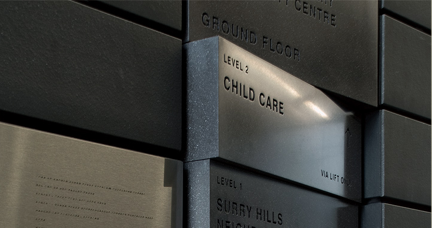

Surry Hills Library
"Collider was asked to create the principle signage for the centre, which was a great opportunity to make something permanent and lasting. The design work included four elements - the main entrance and the three floor directories. The directories, in sympathy to the materials they exist within, are designed to feel like large tilted switches or books roughly stacked. Each module not only holds the description of the destination but also tilts towards that destination. The proximity of the destination determines the angle of the tilt. The angularity of the tilted entrance type bows to the entering public while mimicking the angle of the internal glass facade."
Project description from design and film firm Collider